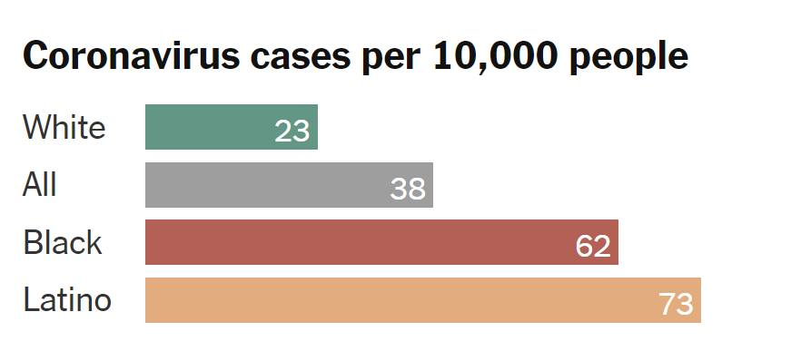

Timeline photos
Black and Latino people have been nearly twice as likely to die from Covid-19 as white people.
In Missouri, 40 percent of those infected are Black or Latino even though those groups make up just 16 percent of the state’s population.
I'm not blaming you directly for systemic racism. But this is what systemic racism looks like. Minorities have less access to health care, less access to testing, less access to tracing.